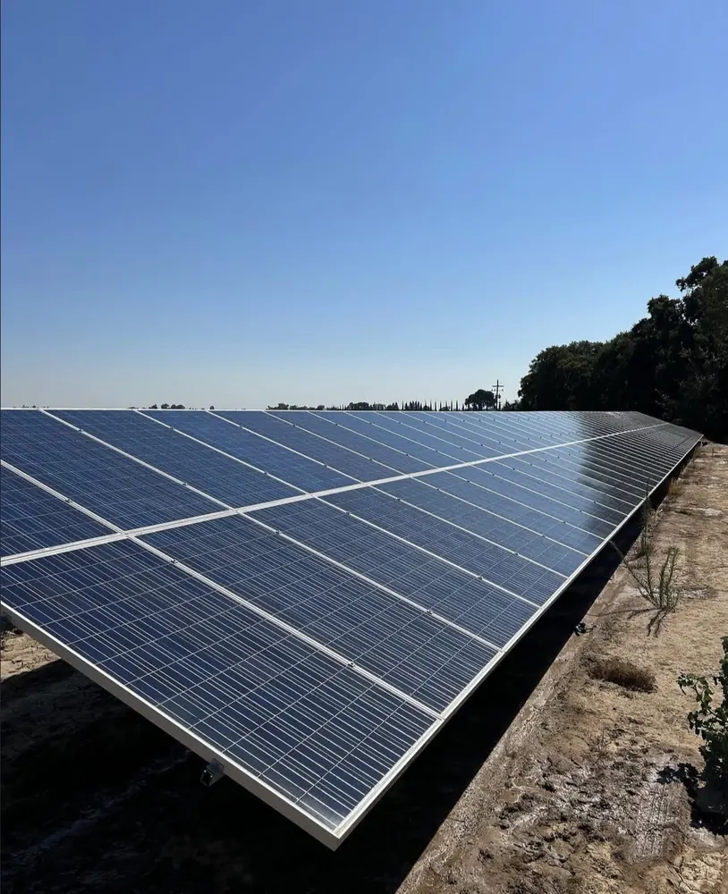
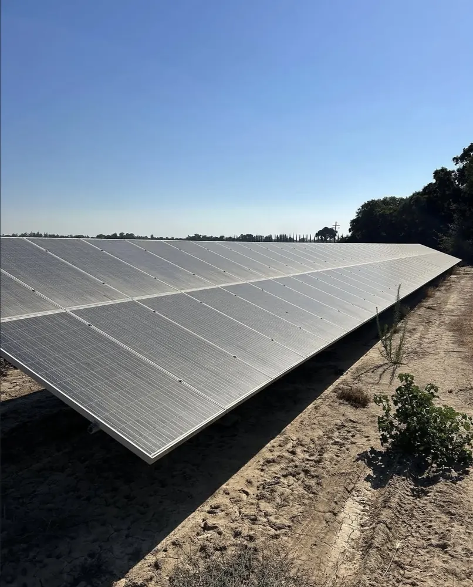

Project gallery
Proof is in the transformation.
A look at real exterior cleaning results from house washing, concrete cleaning, roof cleaning, and solar panel cleaning projects.






Before and after
Matched before and after results.
These paired photos show the same surfaces before and after professional cleaning.
Want your property featured next?
Start with a fast, no-pressure quote.